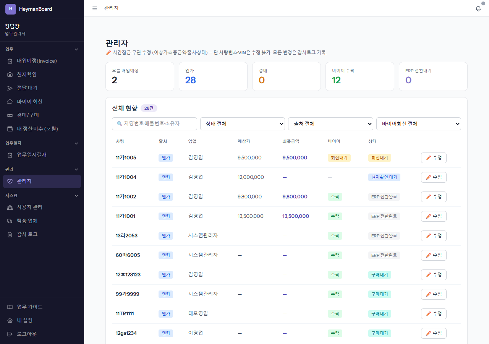
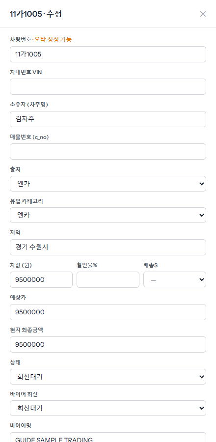
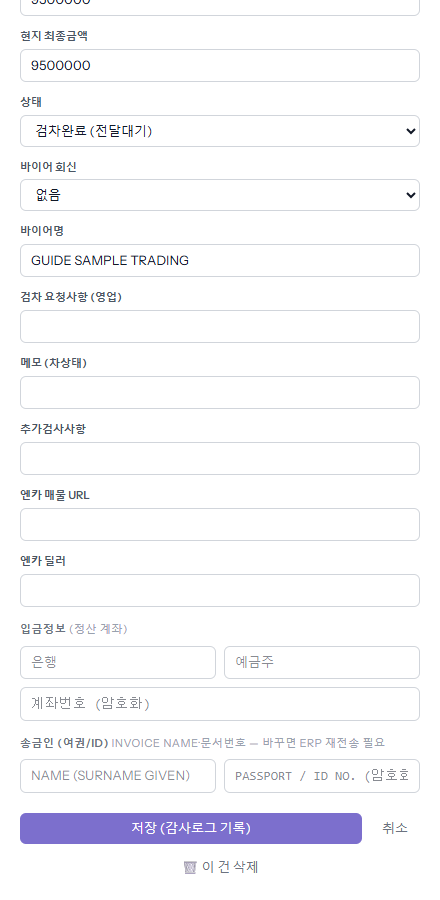
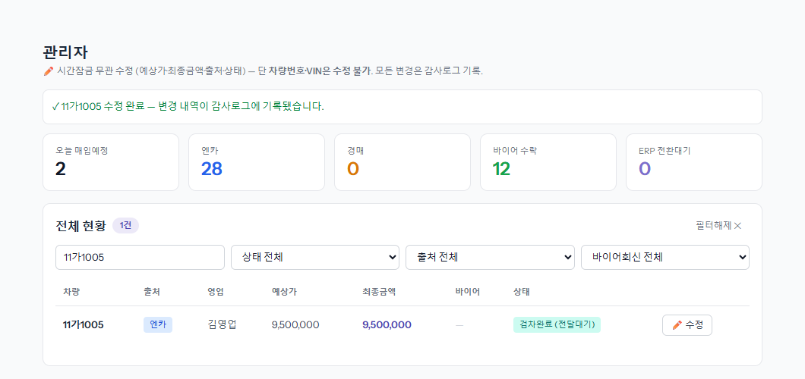
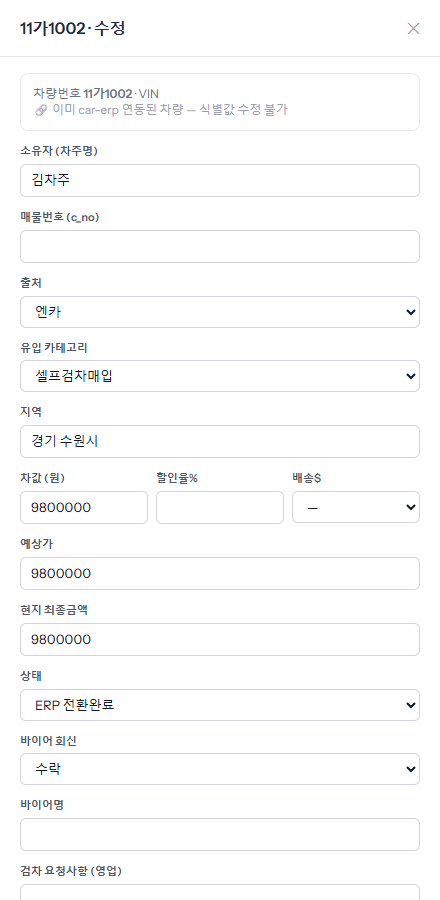
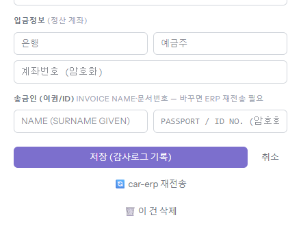
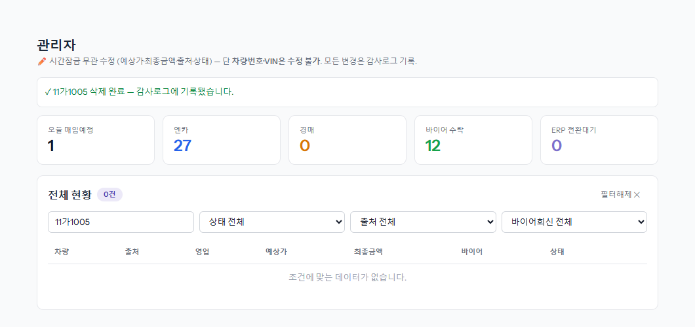

영업이 잘못 적었거나 차가 엉뚱한 단계에 멈췄을 때 고치는 화면입니다. 왼쪽 메뉴 「관리자」에서 엽니다. 다른 화면과 달리 시간잠금·진행 순서와 상관없이 거의 모든 칸을 고칠 수 있습니다. 고친 내용은 전부 감사 로그에 남습니다.
숫자 카드(오늘 매입예정·엔카·경매·바이어 수락·ERP 전환대기)를 누르면 그 조건으로 걸러지고, 다시 누르면 풀립니다. 검색칸은 차량번호·매물번호·소유자로 찾습니다. 상태·출처·바이어 회신으로도 거를 수 있습니다.

차량번호·차대번호는 아직 ERP 로 넘어가지 않은 차만 고칠 수 있습니다(「오타 정정 가능」 표시). 아래로 출처·유입 카테고리·지역·금액·상태·바이어 회신·검차 메모·입금정보·송금인 칸이 이어집니다.

예시는 지역을 「경기 화성시」로 바로잡고, 바이어에게 다시 보내야 해서 상태를 「검차완료 (전달대기)」로, 바이어 회신을 「없음」으로 되돌린 것입니다. 저장하면 이 차는 「전달 대기」로 돌아가 영업이 다시 보낼 수 있습니다.

위에 「수정 완료 — 변경 내역이 감사로그에 기록됐습니다」가 뜨고 표의 상태가 바뀝니다. 어느 칸이 무엇에서 무엇으로 바뀌었는지는 감사 로그에서 봅니다(「감사 로그에서 「누가 넣었나」 찾기」 장).

맨 위가 「이미 car-erp 연동된 차량 — 식별값 수정 불가」로 바뀝니다. 다른 칸은 고칠 수 있지만, 여기서 고친 값이 ERP 에 저절로 바뀌지는 않습니다. ERP 쪽도 바꿔야 하면 아래 재전송을 쓰거나 ERP 에서 직접 고칩니다.

두 버튼은 관리·업무관리자 이상에게만 보입니다.

「삭제 완료 — 감사로그에 기록됐습니다」가 뜹니다. board 에서만 지워집니다. 이미 ERP 로 넘어간 차라면 ERP 의 차는 그대로 있으니, 필요하면 ERP 에서 따로 정리합니다. 지운 차는 다시 재전송할 수 없습니다.
